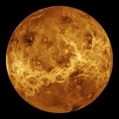
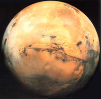
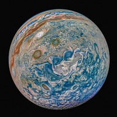
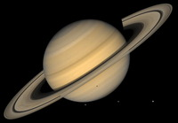

|
Venus |
Mars |
Jupiter |
Saturn |
| Images of planets |
 |
 |
 |
 |
| Hours in a day |
2802 hours |
24.7 hours |
9.9 hours |
10.7 hours |
| Gravity pull |
29.1 ft |
12.1 ft |
75.9 ft |
29.4 ft |
| Mass |
5.37 tons |
0.707 tons |
2092 tons |
626 tons |
| Density |
327 lbs/ft |
246 lbs/ft |
83 lbs/ft |
43 lbs/ft |
| Diameter |
3032 miles |
4221 miles |
88,846 miles |
74,897 miles |
| Distance from the sun |
67.2 miles (10^6) |
141.6 miles (10^6) |
483.7 miles (10^6) |
889.8 miles (10^6) |
| Surface pressure |
91 |
0.01 |
unknown |
unknown |